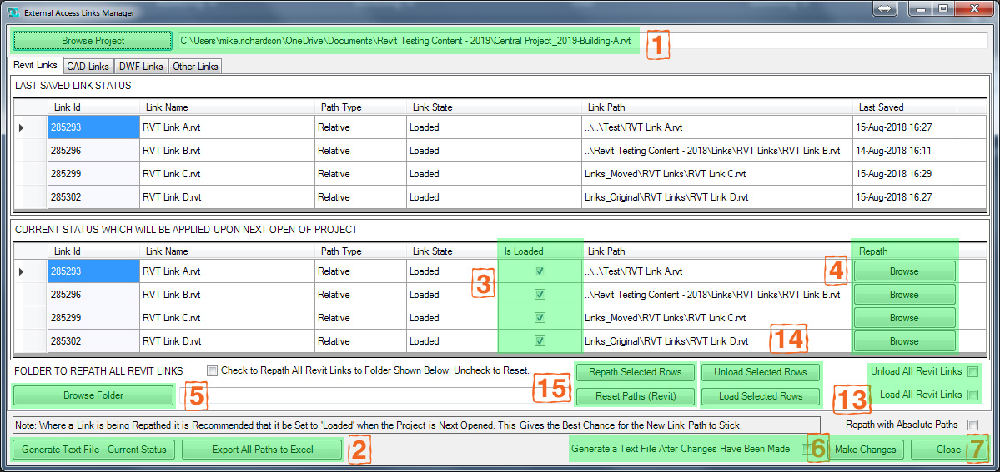
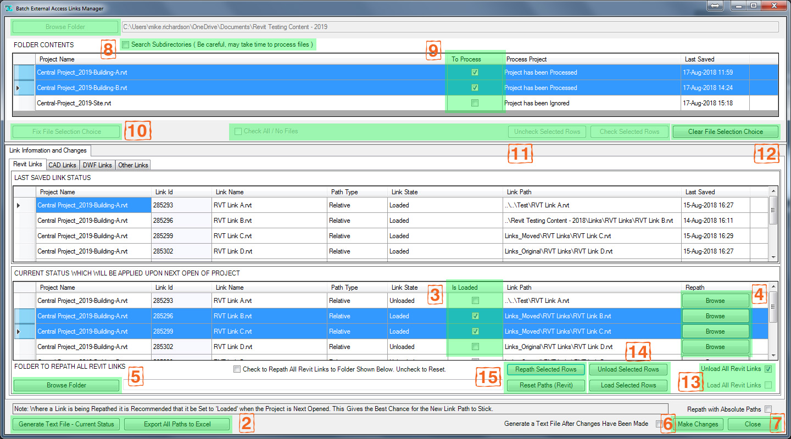

Overview
External Access Links Manager shows the links in a Revit project file without opening it. Pick a project, or a folder of projects, and it lists every Revit, CAD, DWF and other link with its path, path type and load state.
From there you can re-path links, one at a time, several at once or all of a type to one folder, and set each to load or unload. The changes are written into the project file and take effect the next time it is opened. You can also save a text or Excel report of every link, with or without making changes.
Getting started
- Open Revit. No project needs to be open.
- On the Add-Ins tab, find the MRD Tools panel and open the Links Manager drop-down.
- Choose Links Manager to work on one project, or Links Manager Batch to work on every project in a folder.
Links Manager: one project

- Click Browse Project 1 and pick a Revit project (
.rvt). The window fills with that project's links. - Review and change the links, as described under Reading the links and Making changes.
- Click Make Changes 6 to write the changes into the project.
To look at another project, click Browse Project again. The new project's links replace the current ones.
Links Manager Batch: a folder of projects

- Click Browse Folder 8 and pick a folder of Revit projects. Tick Search Subdirectories first to include the folders inside it, but expect a large folder tree to take a while.
- Choose the projects to process with the To Process checkboxes 9. Or use Check All / No Files, or select several rows and click Check Selected Rows or Uncheck Selected Rows 11.
- Click Fix File Selection Choice 10. The link lists fill with every chosen project's links, with a Project Name column to tell them apart.
- Review and change the links, then click Make Changes 6. A summary says how many projects were changed and how many had nothing to change, and lists any that couldn't be changed.
To start again with a different folder or selection, click Clear File Selection Choice 12.
Reading the links
The links are split across four tabs: Revit, CAD, DWF and Other. Other holds things such as keynote and classification files. The Revit, CAD and DWF tabs each have two lists:
- Last saved link status (upper): the links as they were when the project was last saved.
- Current status which will be applied upon next open of project (lower): what the links will be the next time the project opens. This is the list you change.
| Column | Shows |
|---|---|
| Project Name | The project the link belongs to (batch tool only) |
| Link Id | The link's Revit element ID |
| Link Name | The linked file's name |
| Path Type | Relative or Absolute |
| Link State | Loaded, Unloaded or NotFound |
| Link Path | The full path to the linked file, including its name |
| Last Saved | When the linked file was last saved, or "Date Not Found" if it can't be found (upper list) |
Making changes
All changes are made in the lower list, and nothing is written to the project until you click Make Changes 6.
Load or unload links
- Tick or clear a link's Is Loaded checkbox 3.
- Use Load All or Unload All 13 for every link on the tab.
- Select several rows and click Load Selected Rows or Unload Selected Rows 14.
Re-path links
- Click a link's Browse button in the Repath column 4 to pick its new file.
- Select several rows and click Repath Selected Rows to point them all at one folder.
- To re-path every link on the tab to one folder, click Browse Folder 5 in the lower bar, then tick the Repath All … Links checkbox. Clear it to undo.
- Click Reset Paths 15 to put the paths back to what the project holds: as they were read, or as you last wrote them with Make Changes.
Links whose path type is Relative are re-pathed with a relative path, unless you tick Repath with Absolute Paths. A link on a different drive or network share from the project always gets its full path, because no relative path exists.
When you re-path a link, set it to Loaded as well, so Revit picks up the new file when the project opens.
Commit or close
Click Make Changes 6 to write the changes. Only the links you've changed are written, so a project with no changes is left exactly as it is. Tick the checkbox beside it to get a text file listing the result. Close 7 leaves without saving anything you haven't committed.
Reports
Generate Text File – Current Status and Export All Paths to Excel 2 list every link in the project, both as last saved and as it will be when the project next opens. You can run them before or after making changes; neither changes the project.
- The text file is tab-delimited and opens in your default text editor.
- The Excel workbook has a sheet for each status, a Link Type column and filters on every column. Save it as a new file: it won't overwrite an existing one.
Important notes
Workshared projects. Changing a workshared project sets it to a transmitted state. The next time it opens, Revit asks whether to save it as a central model in its current location, or to work with it temporarily.
- The project must not be open in Revit, by you or anyone else, when you click Make Changes.
- Changes take effect the next time the project is opened. Until then, Revit uses the links as last saved.
- IFC and point cloud links aren't supported and don't appear.
Install and uninstall
Run LinksManager-<version>-Setup.exe from the latest release. It installs for you only, needs no admin rights, and covers every Revit year from 2024 to 2027, in the folder Revit reads at start-up.
- The setup isn't digitally signed, so Windows SmartScreen warns about an unknown publisher. Choose More info, then Run anyway.
- The first time each Revit year loads the add-in, Revit asks whether to load it. Choose Always Load.
- If the add-in is already installed for all users on the computer, the setup stops, because Revit would refuse a second copy.
To install without a setup, close Revit and unzip External Access Links Manager.bundle.zip into %APPDATA%\Autodesk\ApplicationPlugins.
To uninstall, close Revit and remove External Access Links Manager from Settings › Apps.
Version history
| Version | Changes |
|---|---|
| 9.1.0 | One install covers Revit 2024–2027, from a new setup that needs no admin rights. The files Excel export needs are now included for Revit 2025 and 2026. Fixes opening the text report and Excel file on Revit 2025 and later, message box titles, relative re-pathing to another drive or network share, and the batch summary, which now lists any project that couldn't be changed. Make Changes writes only the links you've changed, and leaves a project with none untouched, so it isn't set to transmitted for nothing. Clearing Is Loaded on a link Revit couldn't find now unloads it, and a link's state updates as soon as its checkbox is clicked. |
| 9.0.0 | Updated to work with Revit 2024 |
| 8.0.0 | Updated to work with Revit 2023 |
| 7.0.0 | Updated to work with Revit 2022 |
| 6.0.0 | Updated to work with Revit 2021 |
| 5.0.0 | Updated to work with Revit 2020 |
| 4.0.0 | Updated to work with Revit 2019. Added Excel export; re-path, load and unload by selecting several rows; batch tool: check and uncheck files by selecting several rows, and a Search Subdirectories option; resizable split panels; relative re-pathing when the path type is Relative. |
| 3.0.0 | Updated to work with Revit 2018. Added the batch tool, to process every Revit project in a folder, and the Load All / Unload All checkboxes. |
Contact
Mike Richardson Design · www.mikerichardsondesign.com · mike@mikerichardsondesign.com